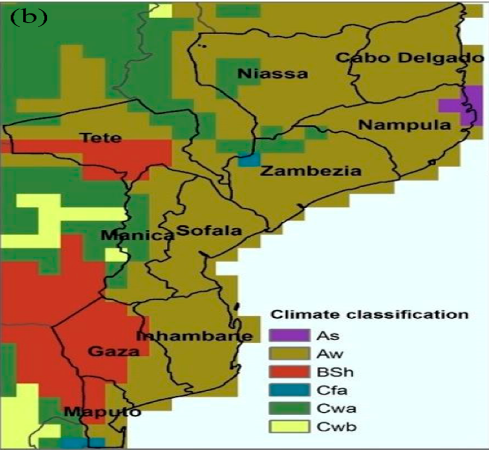
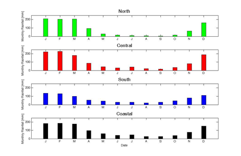
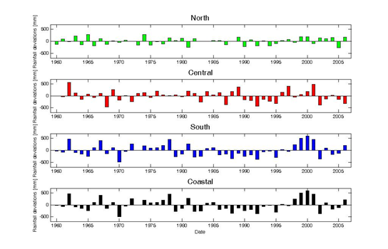
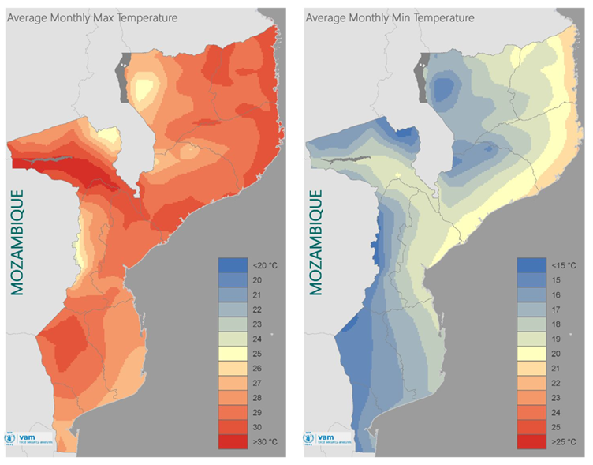
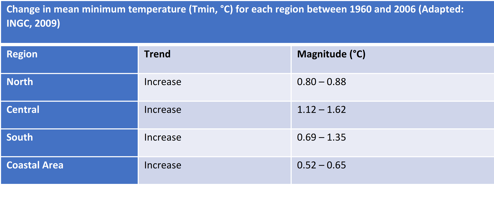
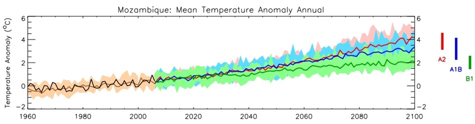
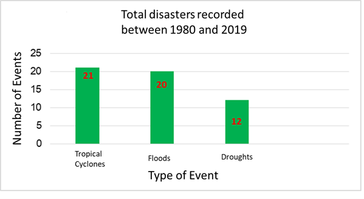
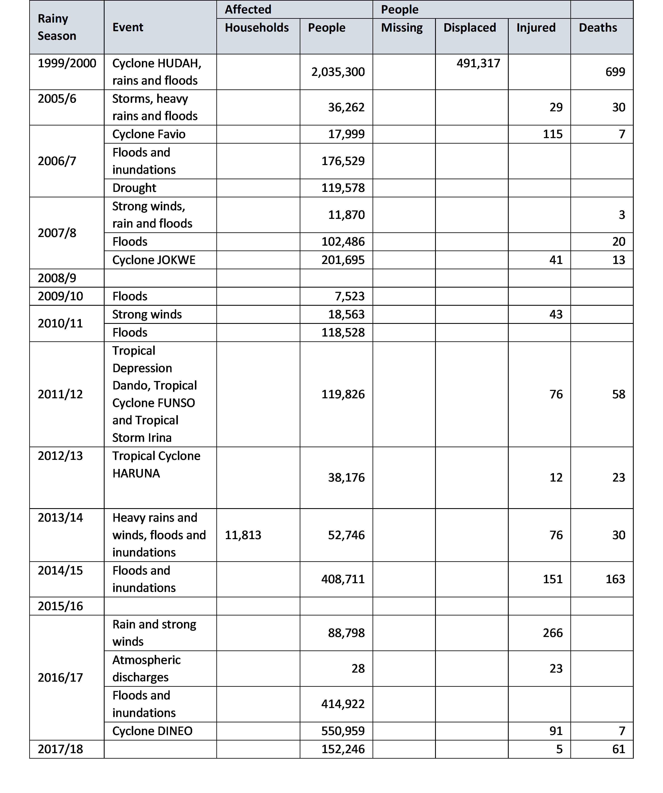

Chapter 5 Vulnerabilities and Impacts Assessment
5.1 Climate Analysis
5.1.1 Baseline climate based on 1981-2010
(From Second National Communication Draft)
Climate
According to the Köppen-Geiger classification, the climate of Mozambique is generally of the Aw type (humid and dry tropical) and with pockets of BSh (hot semi-arid climate), with two very distinct seasons, one hot and rainy , from October to April, and the other cold and dry, from May to September (Gelcer et al. 2018). Other manifestations of climates of the As, Cfa and Cwa types can be found in isolation (figure 1.5).
Figure 1.5: Mozambican climate according to the Köppen-Geiger classification. As = tropical rainy climate; Aw = wet and dry tropical climate; BSh = hot semi-arid climate; Cfa = warm and humid temperate climate; Cwa = warm temperate climate with dry winter.

Source: Gelcer et al. (2018).
The atmospheric circulation in the country is characterized by zones of influence of low equatorial pressures with NE monsoon winds during the summer. The winds in the south and central zone are predominantly SE trades, and in the north zone they are influenced by a monsoon regime with NE winds during the summer and SW during the winter. Mozambique’s precipitation regime is influenced by tropical cyclones formed in the southwestern Indian Ocean basin during the summer, the Intertropical Convergence Zone (ITCZ), the Indian Monsoon, the low pressure systems over the continent, Atlantic and Indian Anticyclones, El Niño/Southern Oscillation (ENOS) and Cold Fronts (Macie, 2016).
The spatial distribution of precipitation varies widely across the country. Precipitation is most abundant in the northern zone, where the annual average varies between 800 and 1,200 mm, becoming exceptionally high, 1,500 mm, in the highlands of Zambezia, Niassa and mountainous areas of Gorongosa. Central Mozambique and the entire coastline receive amounts of rain ranging between 800 and 1,000 mm. However, in some regions of the province of Tete, precipitation values can decrease by up to 600 mm. The south of the country is generally drier, with an average rainfall of less than 800 mm, reaching values of 300 mm at the administrative post of Pafuri, in Gaza province (figure 1.6).
Figure 1.6: Spatial distribution of accumulated annual precipitation in Mozambique

Source: Mozambique Precipitation Atlas, INAM, 2012
Seasonal Precipitation Variation
The period of greatest rainfall in the country corresponds to the summer in the Southern Hemisphere, between October and April. During the rainy season, the highest precipitation values occur in the months of January, February and March (figure 1.7), contributing to about 45% of the total annual precipitation and is often associated with the migration and activity of the Inter-Tropical Convergence Zone (ITCZ).
In the northern region of the country, typical monthly precipitation values are 20 – 200 mm/month during the rainy season and 5 – 30 mm/month in the dry season. The central region registers between 30 – 200 mm/month in the rainy season and 20 – 40 mm/month in the dry season. Southern Mozambique, with the lowest precipitation values, registers between 40 -130 mm/month in the rainy season and 20 - 40 mm/month in the dry season. It is mainly the southern region that is prone to drought and some southern parts of Tete province in the center of the country.
Figure 1.7: Seasonal variation in monthly rainfall accumulated in different regions of the country

Source: INGC, 2009
Interannual variation of precipitation
In Mozambique there is very high inter-annual rainfall variability in the rainy season, particularly in the central and southern regions. This variability causes significant fluctuations in the annual amounts of precipitation, with years with an abundance of precipitation (with greater probability of floods or inundation) or precipitation deficit (with greater probability of droughts) being registered. Figure 1.8 shows rainfall deviations from the climatological mean in four geographic regions of the country including the coastal region, from 1960 to 2006. The best-documented cause of this variability is the southern oscillation and the El Niño phenomenon (ENSO), which causes on average warmer and drier conditions; and relatively cooler and wetter conditions (La Niña) in the rainy season of eastern southern Africa. Evidence on the relationship between ENSO and rainfall in southern Africa can be found in several studies (Reason et al., 2000; Reason and Jagadheesha, 2005).
Figure 1.8: Precipitation deviations showing intra-annual variability and probability of occurrence of floods and droughts in four regions of the country, north, centre, south and coastal

Source: INGC, 2009.
Average Temperatures
In general, average temperatures in Mozambique range between 25 – 30 °C (average maximum temperatures) and between 15 – 21 °C (average minimum temperatures) (figure 1.9). The highest mean maximum temperatures are recorded in the coastal area of the country, in the south of Tete province and in the western part of Gaza province (figure 1.9 on the left). As for the average minimum temperatures, these have a decreasing pattern from the coast to the interior. The highest average minimum temperatures are recorded along the northern coast, while the lowest are found in Gaza province (WFP, 2018). In this region of Gaza, there is also the largest temperature range in the country.
Figure 1.9: Spatial distribution of mean maximum temperature (left) and mean minimum temperature in Mozambique, calculated for the period 1982 - 2017.
 Source: WFP, 2018. Mozambique Climate Analysis.
Historical Trends
Average temperature trends show positive variations (increase in average temperature) in most parts of the country. Studies indicate that the average annual temperature increased by 0.6 °C between 1960 – 2006, at an average rate of 0.13 °C per decade for most seasons of the year (INGC, 2009). The study also points to an increase in the frequency of hot days and nights (days with a maximum temperature> 30 °C and nights with a minimum temperature> 20 °C respectively). The average number of “hot” days per year in Mozambique increased by 6.8% of days (~25 days) and the average number of “hot” nights per year increased by 8.4% of nights (~31 nights) during the same period in analysis (1960 and 2006).
Maximum and minimum temperatures
Trends in increasing maximum and minimum temperatures (warming) have not been uniform across the country. Increases in mean maximum temperature of greater magnitude were recorded in the North (0.76 – 1.16 °C), followed by central Mozambique between 1960 and 2006. Changes in average minimum temperatures in certain regions of the country are even greater, indicating large increases between 1.12 - 1.62°C (in the central region of the country) during the same period under analysis (INGC, 2009). Tables 1.4 and 1.5 provide a summary of trends in average maximum and minimum temperatures for different regions of the country.
Table 1.4: Change in mean maximum temperature (Tmax, °C) for each region between 1960 and 2006
 Adapted: INGC, 2009
Adapted: INGC, 2009
Table 1.5: Change in mean minimum temperature (Tmin, °C) for each region between 1960 and 2006
 Adapted: INGC, 2009
Precipitation Trends
Precipitation trends in the country are not significantly observable, due to the great inter-annual variability of rainfall in different seasons. However, the analysis of historical data made in several studies points to a late start of the rainy season in Mozambique, as well as an increase in the persistence of dry days.
The INGC report (2009), analysing data between 1960 and 2006, indicates a delay in the start of the rainy season that can reach between 20 and 45 days in some places, as well as a more pronounced persistence of dry days in the Northeast of the country from March to May and September to November.
The study by Mcsweeney et al. (2010) found that in the period between 1960 and 2006, the average annual rainfall in Mozambique decreased at an average rate of 3.1% per decade, in the period under review. On the other hand, despite the decreases observed in total rainfall, the amount of rain falling during heavy rain events increased at an average rate of 2.6% per decade, with these increases being more pronounced in the period from December to February (DJF ).
Climate Projections
- Future Temperature Projections
The Intergovernmental Panel on Climate Change (IPCC) in its Fifth Assessment Report (AR5) presents unequivocal evidence of climate change around the world: the atmosphere and oceans are warming, the extent and volume of snow and ice is decreasing, sea levels are rising and weather patterns are changing. The most optimistic scenario predicts an increase in the Earth’s temperature between 0.3 °C and 1.7 °C and, in the worst case scenario, the Earth’s surface could warm between 2.6 °C and 4.8 °C over this century by 2100 (IPCC, 2014) . The Paris Agreement approved in December 2015 under the United Nations Framework Convention on Climate Change (UNFCCC) established a global framework to reduce carbon dioxide (CO2) emissions and noted that global warming should be limited to 1.5°C. In Mozambique, some studies point to a significant increase in temperature, with the average annual temperature projected to increase between 1.0 to 2.8 °C by 2060 and between 1.4 to 4.6 °C by 2090 (INGC, 2009; Mcsweeney et al. al., 2010) (figure 1.10). The projected rate of warming will be faster in inland Mozambique than in areas closer to the coast. All projections indicate substantial increases in the frequency of days and nights considered “hot” in the current climate. This increase will be between 17 and 35% of days per year around 2060, and between 20 and 53% of days per year in 2090. The same projections also indicate a reduction in the frequency of days and nights considered “cold” in the current climate.
Figure 1.10: Average annual temperature trends in Mozambique between 1960 and 2006 (black line) and the projected future for three emission scenarios (colored lines). The colored bars on the right side indicate the different scenarios used in the simulations (A2, A1B and B1) as well as the uncertainty ranges in the average climate projections around 2090 – 2100
 Adapted from Mcsweeney et al., 2010.
Future Precipitation Projections
Precipitation variations are not as clear as temperature variations. The range of precipitation projections resulting from different models is large and encompasses both negative and positive changes. There are indications of variations between -15 to +20 mm per month, or -15% to +34% (Mcsweeney et al., 2010). However, the models show more consistency in seasonal projections, indicating a reduction in rainfall in the dry season, that is, in the period from June to August (JJA) and from September to November (SON). This reduction is partially offset by increased rainfall in the rainy season, from December to February (DJF), with greater expression in northern Mozambique (Mcsweeney et al., 2010). In general, precipitation projections do not indicate substantial changes in annual precipitation, but rather changes in precipitation patterns (Figure 1.11).
Figure 1.11: Spatial patterns of monthly rainfall averages from September to November projected for the years 2030, 2060, and 2090
 Adapted from Mcsweeney et al., 2010.
Adapted from Mcsweeney et al., 2010.
5.2 Vulnerabilities, impacts and risks
(From Second National Communication Draft)
Introduction
Mozambique is vulnerable to climate change due to its geographic location, low adaptive capacity as a result of poverty, limited investments in technology and weak infrastructure and social services. Climate change manifests through increased frequency and intensity of extreme events (droughts, floods, floods, event storms and tropical cyclones), rising sea levels, changes in temperature and precipitation patterns.
The consequences of the impacts of climate change include loss of human life, destruction of social and economic infrastructure, loss of domestic animals, loss of agricultural areas and crops, increased prices of agricultural products, deterioration of human health, environmental degradation with emphasis on erosion and saline intrusion.
This chapter presents the results of the vulnerability assessment and adaptation measures carried out in 2010, which covered the following sectors/areas: agriculture (maize cultivation in Chokwé); pastures and livestock, in the Limpopo basin; water resources, the Maputo basin was considered; fishing, shrimp in the Sofala bank; the coastal zone; mopane forests; and, health considered malaria and cholera. In the process of updating the SNA that started in 2020, other relevant sectors/areas were included, namely, biodiversity, infrastructure, energy and social protection, for which a review of the existing literature was carried out. Information on the impact of extreme events that occurred in the country in the sectors/areas covered was also included, using the Balance Sheet Reports of the Rainy Seasons produced by INGD.
Information on the vulnerability of the health sector was updated based on the preliminary results of the study “Assessment of the Vulnerability and Adaptation to Climate Change of the Health Sector in Mozambique” which includes the assessment of the impact of climate change on two climate-sensitive diseases in Mozambique: Malaria and Acute Diarrhea, carried out by MISAU.
In addition to the vulnerability assessment mentioned above, this chapter includes summary information on the vulnerability of 98 districts (Table 3.2) in which Local Adaptation Plans (PLAs) were formulated and approved within the scope of the implementation of ENAMMC. For the formulation of the PLAs in the districts, at least two communities in the district that participate in the assessment of the climate vulnerability and adaptability of the communities are involved – Step 2 of the guide for the Formulation of Local Adaptation Plans. After the assessment with the communities, step 3 is followed, which is an assessment in the district. These two steps aim to determine the extent to which communities/districts are vulnerable to climate change, analysing trends, threats, opportunities and adaptive capacity of communities/districts to climate change and determining adaptation measures to improve their resilience to climate change.
The Guide for Formulating Local Adaptation Plans includes the Climate Vulnerability and Capabilities Analysis (CVCA) tools - developed by CARE and the Theory of Change (ToM). The PLAs are part of the short-term objectives defined by ENAMMC - increasing local resilience, fighting poverty and identifying opportunities for adaptation and low-carbon development at the community level, to be included in district planning.
Climate Change Impacts
Disasters
Historical data on extreme events show that three climate-related hazards are most likely to occur in Mozambique, namely tropical cyclones, floods and droughts. These events are often associated with socio-economic damage, translated into loss of human life, human suffering, loss of assets, destruction of critical infrastructure (eg health facilities, schools, access roads, etc.) and other indirect losses.
An analysis of data from 1980 to 2019 shows that Mozambique was affected by 21 tropical cyclones, 20 flood events and 12 droughts (figure 3.1). This means that on average, the country is affected by a tropical cyclone or a flood event every two years and a drought event every three years. Tropical cyclones and flood events represent about 77% of the total events that occurred in the period under review.
Figure 3.1: Total number of extreme events that occurred in Mozambique between 1980 – 2019

Source: produced based on DeSinventar data and INGC rainy season balance reports.
Historical trends of extreme events
One of the crucial questions today is whether there is any evidence of an increase in extreme disaster-causing events or not. Through an analysis of the trend of events registered in the last four decades (1980 – 2019), it is noted that the number of events that devastated the country increased significantly since the 2000s (figure 3.2). From the decade (2000-2010) to the current, the number of cyclones competes with the number of flood events, despite the slowdown of drought events.
Taking into account that tropical cyclones are often associated with heavy rain events that can contribute a significant proportion of precipitation in a very short period which in turn cause flooding in various regions of the country, with serious implications for the health of communities, the worsening of these phenomena in recent decades should deserve special attention from health authorities and beyond.
Figure 3.2: Trend in the number of extreme events occurring between 1980 and 2019.

The direct impact of these events is often expressed by the number of human lives lost, people affected through loss of personal property and livelihoods, destruction of the country’s critical infrastructure such as roads, bridges, water supply system, schools, hospitals, as well as the outbreak of water-borne diseases (e.g. malaria, cholera, diarrhoea, etc.). However, the lack of systematic and homogeneous recording of events and their impacts and, on the one hand, the persistence in considering only large-scale and high-impact disasters over a short period of time have hidden thousands of small and medium-scale disasters that occur every year in the country. Consequently, Mozambique does not know the real value of direct and/or indirect economic losses associated with these events.
Table 3.1 presents the impact of climate change on the human dimension. Regarding the economic impacts, these are presented in the respective sectors where the vulnerability analysis is carried out.
Table 3.1: Summary of impacts of extreme events on the human dimension

Source: Rainy Season Balance Reports 2000, 2005/6 to 2017/18
The extreme weather events that occurred in Mozambique in 2000 and in the rainy seasons from 2005/6 to 2017/18 affected an estimated 4,074,606 people, injured 885 people and caused 1,114 deaths. About 50% of affected, injured and deaths resulted from the occurrence of Cyclone HUDAH, and it should be noted that tropical cyclones are events that cause greater impacts on the human dimension.
These impacts represent a setback in the process of poverty reduction, which is the priority of the Governments of developing countries, and increase their dependence on international aid. In this context, assessing the vulnerability of the most important social and economic sectors and identifying adaptation measures is of high priority.
Table 3.2: PLAs prepared in the period 2014 to 2018

The main threats indicated by communities and districts are grouped into droughts, floods and inundations, tropical cyclones/strong winds, sea level rise, epidemics, heat waves and/or cold spells, food insecurity, wildlife conflict and pests. (Include graph showing how each of the threats)
In addition to the PLAs, sector plans and other relevant instruments were also formulated, highlighting:
The national action plan for the expansion of climate-resilient agriculture. This plan seeks to strengthen agricultural extension services to small farmers as well as knowledge management and sharing and strengthening in coordination with research and extension services;
Ministerial approval of national climate-resilient road standards and maintenance approaches; and the ministerial approval of mandatory climate risk screening for new road investments;
National Program for Productive Social Action (PNASP) through which households living in vulnerable districts are involved in public works activities in order to diversify their sources of income and, consequently, make them resilient.
Climate Scenarios
The vulnerability analysis carried out at the SNC considered the climate projections developed by INGC “Studies on the Impacts of Climate Change on Disaster Risk in Mozambique Synthesis Report – Second Version” in 2009.
The methodology of the INGC study was based on climatological modeling (temperature and rainfall) with the main purpose of understanding how Mozambique’s climate may already be changing and how it can be expected to change in the future. This study details the observed changes in the country’s seasonal climate during the period 1960 to 2005, in terms of temperatures and rainfall patterns (INGC, 2009).
Both historical trends and future projections were derived from daily temperatures (maximum and minimum) and rainfall values recorded since 1960, from 32 synoptic weather stations within Mozambique (INGC, 2009).
To project future scenarios in terms of the country’s climate (temperature and rainfall), focusing on the mid-century (2046-2065) and late-century (2080-2100) periods, seven general circulation models were used: ECHAM, GFDL , IPSL, CCCMA, CNRM, CSIRO and GISS.
INGC’s projections (2009) anticipate that climate change in Mozambique is mainly manifested in the following:
Temperature patterns
Atmosphere – with an average increase between 1.5ºC and 3.0ºC in the period between 2046 and 2065 and recording of more hot days and fewer cold days, with an increase in the maximum and minimum temperature;
Oceans – with rising mean sea levels and changes in the distribution and availability of fish stocks and effects on marine ecosystems (such as corals);
Precipitation patterns
With irregular rainfall behavior in terms of start and end times, rainfall (heavy precipitation phenomena in a short space of time) and duration of the rainy season (drought), disfiguring the notions of “official” and “real” start of the agricultural season, which may result in some regions in a decrease in current potential yields of around 25%;
With a growing reduction in potential agricultural income levels of up to 20% in the main crops that constitute the basis of food security and an essential condition for improving the per capita income of Mozambican families;
Increased frequency and intensity of extreme events (droughts, floods and tropical cyclones)
Persistence of the situation of extraordinary floods in identifiable places in the country which can be referred to as “risk zones”;
Cyclones and other strong winds;
Prolonged droughts;
Sea level rise: 15 cm, 30 cm and 45 cm as a consequence of thermal expansion and 15 cm, 110 cm and 415 cm as a consequence of the reduction of continental ice caps in the years 2030, 2060 and 2100, respectively;
Areas with potential increased risk identified due to the emergence of other adverse natural phenomena such as loss by submersion and erosion of coastal areas, intrusion of saline water, desertification;
Reduction of areas available for agricultural practice in green or low-lying areas;
Many of the country’s main coastal urban centers, including Maputo, Beira and Quelimane, are already in a critical situation in terms of vulnerability (human lives, properties, social infrastructure, etc.) to the effects of climate change.
(General Outline Prototype NA)
Climate change impacts: highlights of recent impacts:
Mozambique is particularly vulnerable to Climate Change (CC) due to its location downstream of shared watersheds (Floods, e.g. 2000 and 2013 Limpopo Basin; 2007 Zambeze, 2013 and 2019 Licungo Basin, etc.)
Increase in the frequency and intensity of extreme climatic events, such as droughts, floods and tropical cyclones (recent cyclones with high impact: Idai and Keneth 2019, Eline in 2000, etc.)
The long shoreline and the existence of extensive low-lands below sea level (sea level rise, storm surge, salt intrusion);.
The country’s vulnerability is also increased by its low adaptive capacity, poverty, limited investment in modern technology, and weaknesses in its infrastructure and social services, especially those related to health and sanitation (e.g. the malaria and cholera in 2019 after the cyclone Idai and Keneth in central and northern Mozambique).
These events result in the loss of human lives, crops, livestock and wildlife; the destruction of social and economic infrastructure; increased dependency on international support; food price increases; harm to human health and the environment; and the destruction of ecosystems.
CC represents a major barrier to the Government and its partners’ efforts to fight poverty and achieve the MDGs. (Government of Mozambique, 2012)